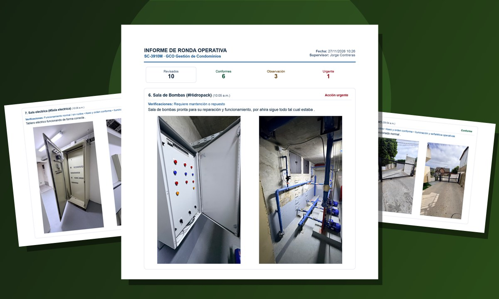

Novedades y Consejos
Toda la información clave sobre copropiedad, normativas y mantenimiento técnico para las comunidades del Gran Concepción.

27 DE NOVIEMBRE, 2026
Así supervisamos tu edificio en terreno: Informes de Ronda Operativa en PDF
Revisa capturas reales de nuestros reportes de ronda con fotos por sector, semáforo de urgencias y respaldo inmediato para el Comité...
Ver documento real y ventajas →
20 DE NOVIEMBRE, 2026
GCO App: 6 ventajas que nos diferencian de una administración tradicional
Semáforo QR en ascensores y bombas, tickets con foto sin descargas, modo offline en subterráneos y Portal Comité bajo Ley 21.442...
Conocer las 6 ventajas →
16 DE SEPTIEMBRE, 2026
¿Comité de Administración agotado en Concepción?
Integrar el comité no debe ser un segundo empleo no remunerado. Descubre qué exige la ley y cuándo el problema radica en tu administración...
Leer artículo
25 DE AGOSTO, 2026
Mantención de hidropack y limpieza de estanques de agua
¿Qué agua estás bebiendo? Los graves riesgos a la salud por falta de mantención sanitaria y cómo prevenirlos en tu comunidad...
Leer artículo
12 DE MAYO, 2026
Entendiendo la Ley 21.442 y su impacto local
Un desglose de los puntos clave sobre transparencia financiera y planes de emergencia que los comités de Concepción deben implementar hoy...
Leer artículo
15 DE MARZO, 2026
Mantención de techumbres entre Enero y Abril en Concepción
Evita los costosos daños del invierno. Por qué estos meses son la "ventana de oro" para impermeabilizar y limpiar canaletas...
Leer artículo
12 DE DICIEMBRE, 2025
Mantenimiento de edificios en Concepción durante el verano
Analizamos las instancias críticas de revisión de calderas y salas de bombas para prevenir fallas en la Región del Biobío...
Leer artículo